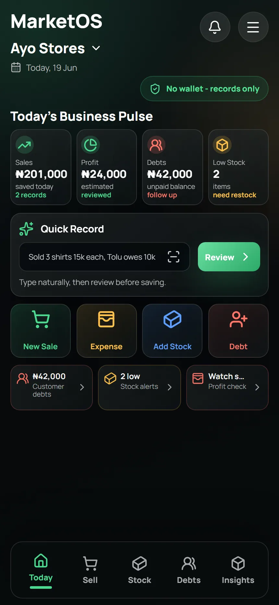
LiveMarketOS
Business operations application
React / TypeScript / Supabase / ViteWhat I built: Built record workflows, dashboards and customer tools.
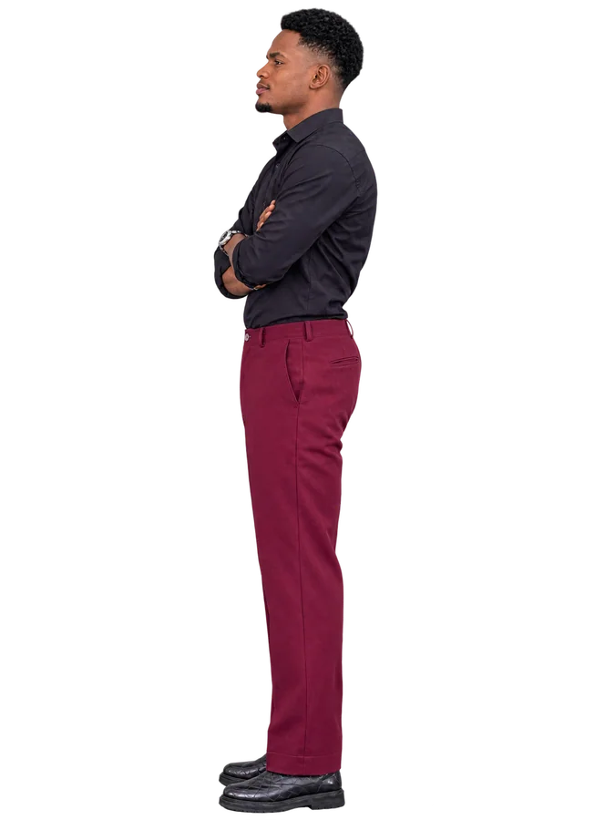
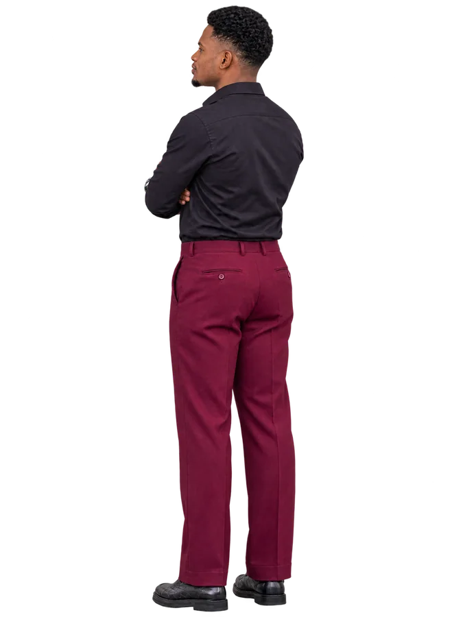
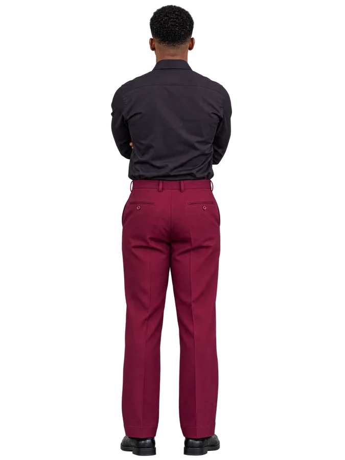
I'M TABI KELVIN AYOMIDE
FULL-STACK DEVELOPER
I build thoughtful, reliable web products—from business tools and online stores to interactive experiences.
I start with the people using a product, then turn practical needs into clear, responsive interfaces and dependable workflows. I'm open to client projects, collaborations and full-time development roles.
DOWNLOAD MY RÉSUMÉ VIEW WORKFULL-STACK DEVELOPMENT
Interfaces, data, payments and delivery.Selected projects
A few things I’ve built.

LiveBusiness operations application
React / TypeScript / Supabase / ViteWhat I built: Built record workflows, dashboards and customer tools.
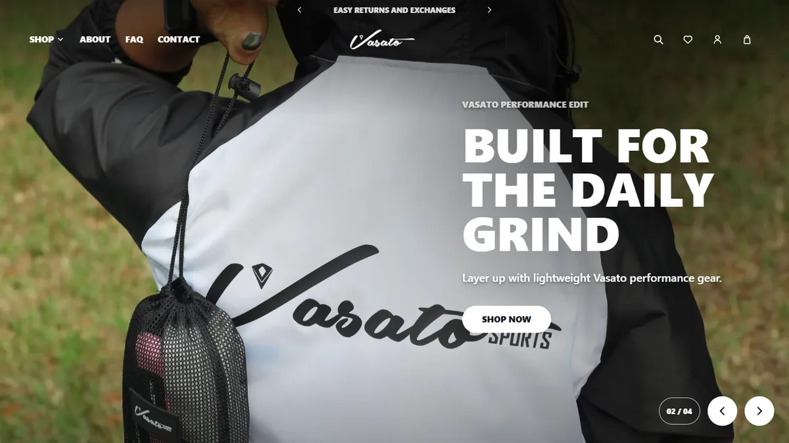
LiveFull-stack ecommerce platform
Next.js / TypeScript / Supabase / StripeWhat I built: Built storefront, checkout and admin workflows.
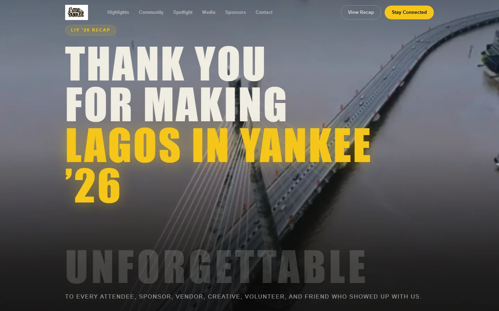
LiveCommunity event and recap website
HTML / CSS / JavaScriptWhat I built: Built a responsive event website with community and recap content.
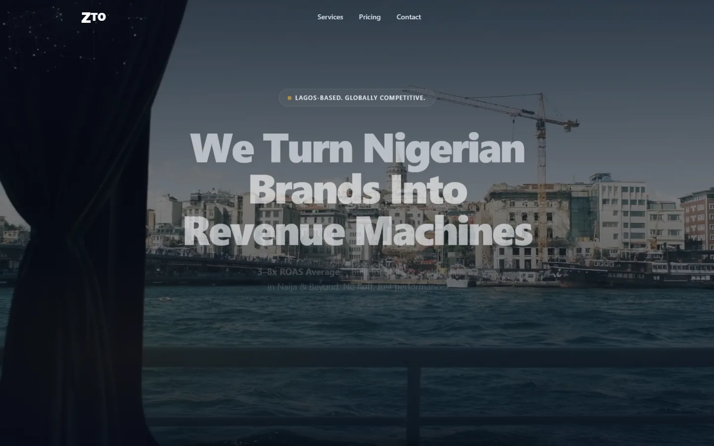
LiveDigital marketing agency website
HTML / CSS / JavaScriptWhat I built: Built a responsive website for a digital marketing agency.
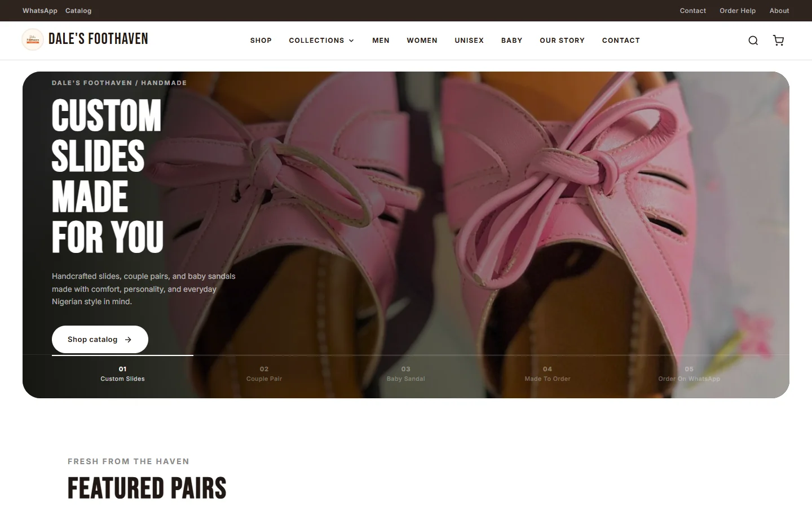
LiveFootwear ecommerce website
HTML / CSS / JavaScriptWhat I built: Built a responsive footwear storefront and product catalog.
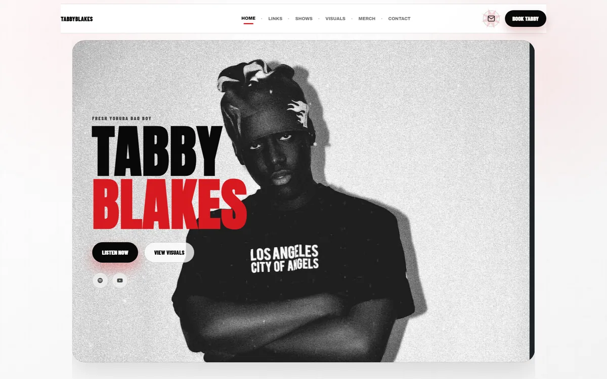
LiveResponsive artist platform
HTML / CSS / JavaScriptWhat I built: Built the responsive artist website.
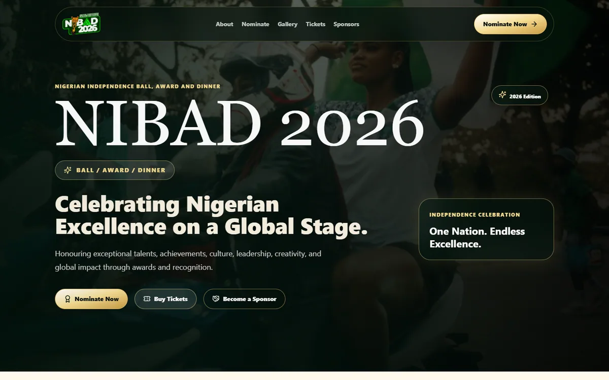
LiveEvent and awards website
HTML / CSS / JavaScriptWhat I built: Built a responsive event website for nominations, tickets and galleries.
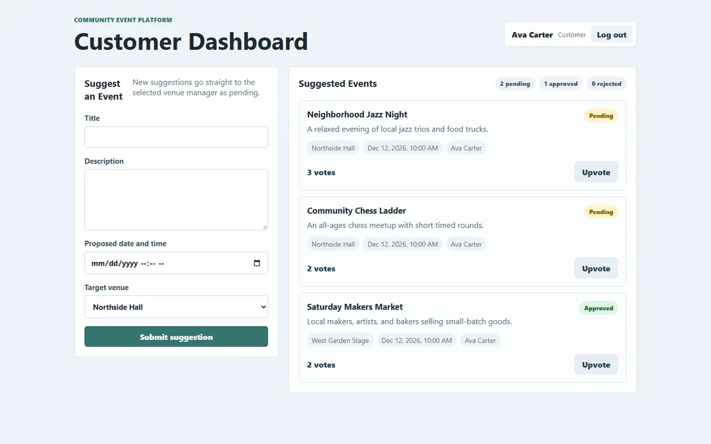
Local / demo dataCommunity event planning application
React / TypeScript / Express / PrismaWhat I built: Built event suggestions, voting and venue approval workflows.
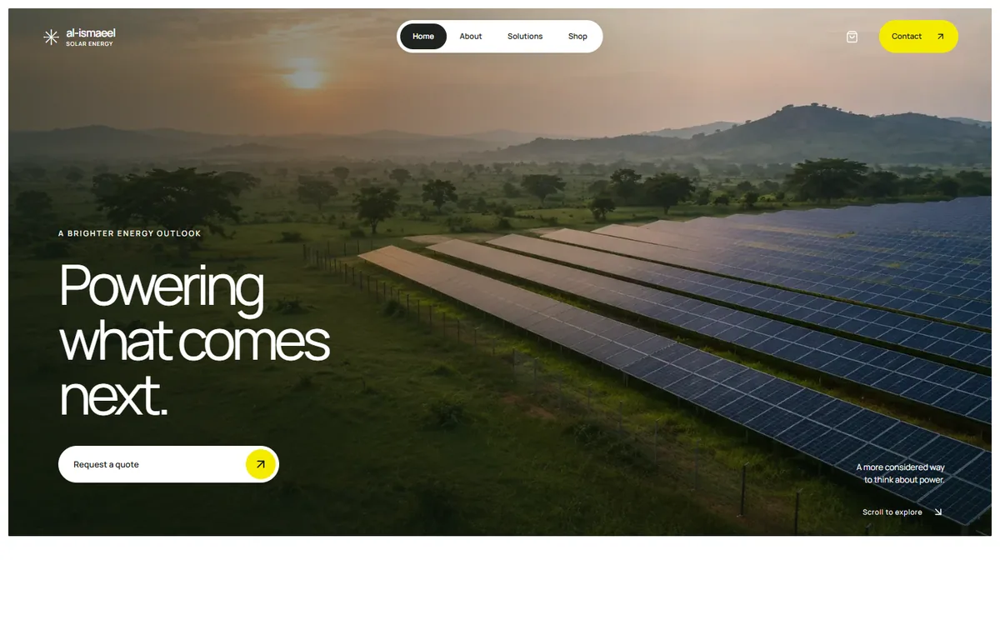
PrototypeSolar website and shop prototype
Next.js / TypeScript / PostgreSQL / PaystackWhat I built: Built a solar website and prototype shop experience.
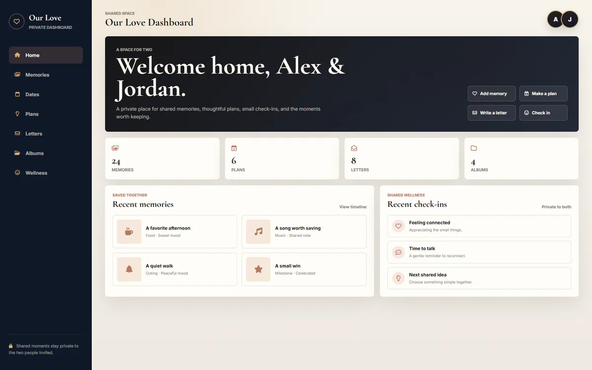
PrivatePrivate shared relationship dashboard
React / Supabase / VitePrivate product / No public actions
What I built: Built a private shared dashboard.
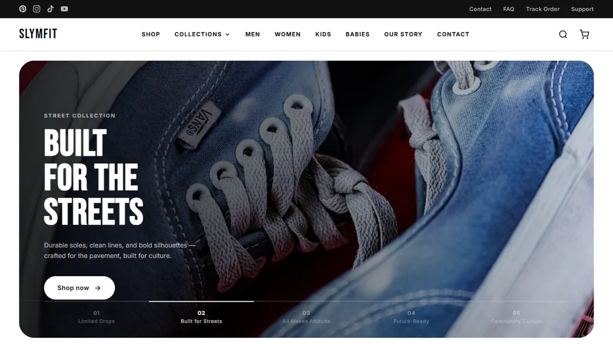
LocalFootwear storefront and checkout API
JavaScript / Express / Stripe / TurnstilePrivate / Local build
What I built: Built the storefront and checkout API.
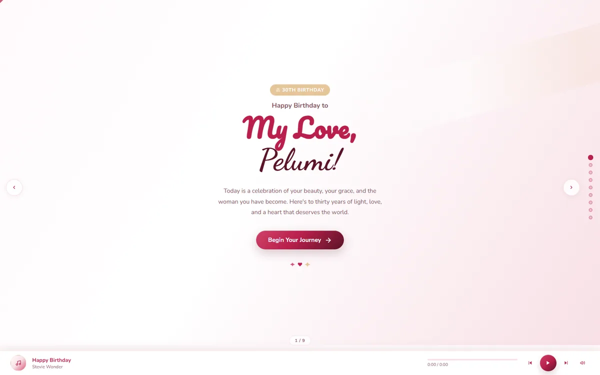
LiveInteractive celebration experience
HTML / CSS / JavaScriptWhat I built: Built an interactive birthday experience.
WORK PROCESS
Product deep dives
A closer look at two builds.
MarketOS / Business operations
Small-business activity can be spread across notebooks, receipts, messages, and memory. Daily records needed to stay quick on a phone without losing dependable review steps.
Designed and implemented the responsive interface, business setup, record lifecycles, customer workflows, validation, Supabase repository layer, and dashboard calculations.
Built focused flows for sales, stock, expenses, debts, customer ledgers, receipt-image review, daily closeout insights, and installation guidance.
Separated validation and local record behavior from persistence, kept scanned entries in reviewable draft states, and modeled voiding and verification explicitly.
A deployed mobile-first workspace with authenticated setup, Supabase-backed records, customer and inventory views, and responsive daily workflows.
Vasato / Ecommerce
The storefront, accounts, checkout, order management, support, and tracking needed to behave as one system while keeping payment state and customer data trustworthy.
Implemented the responsive shopping experience, Supabase data model and policies, checkout routes, Stripe webhooks, admin tools, notifications, and launch documentation.
Connected catalog, variants, wishlist, cart, accounts, orders, support messages, tracking updates, Resend email delivery, and a protected admin workflow.
Persisted orders before Stripe, accepted only signed webhook payment updates, applied row-level security, protected public flows with Turnstile, and recorded notification failures.
A deployed commerce platform with working customer and admin journeys plus documented launch, maintenance, tracking, and operational handoff procedures.
Lagos In Yankee / Event and community
Bring the event experience together in a place where attendees, vendors, sponsors and the wider community can revisit and share it.
Built a responsive event website with community and vendor recognition, sponsor information, event highlights and ways to stay connected.
Organized the official film, photo and short-video gallery, event recap and enquiry routes into a single experience.
A live recap website that keeps the celebration and its community accessible after the event.
Dale's Foothaven / Ecommerce
Give a handmade footwear brand a clear way to present its range and help customers start an order.
Built a responsive storefront with product categories, a catalog, prices in Nigerian naira and a shopping cart.
Connected the cart to a prepared WhatsApp order enquiry with product names, quantities and a subtotal for follow-up.
A live catalog and enquiry-led shopping experience for custom slides, couple pairs and baby sandals.
TABBYBLAKES / Artist website
Bring an artist's music, visual identity and booking information together in one responsive home.
Built the responsive artist website and organized music, shows, visuals, merchandise and contact into clear sections.
Connected listening links, an image and video gallery, merchandise previews and a booking form that opens an email draft.
A live artist website where visitors can explore the work and start a booking conversation.
HAVE A PROJECT IN MIND?
Open to projects, collaborations and full-time roles.
tabibunmianne@gmail.com